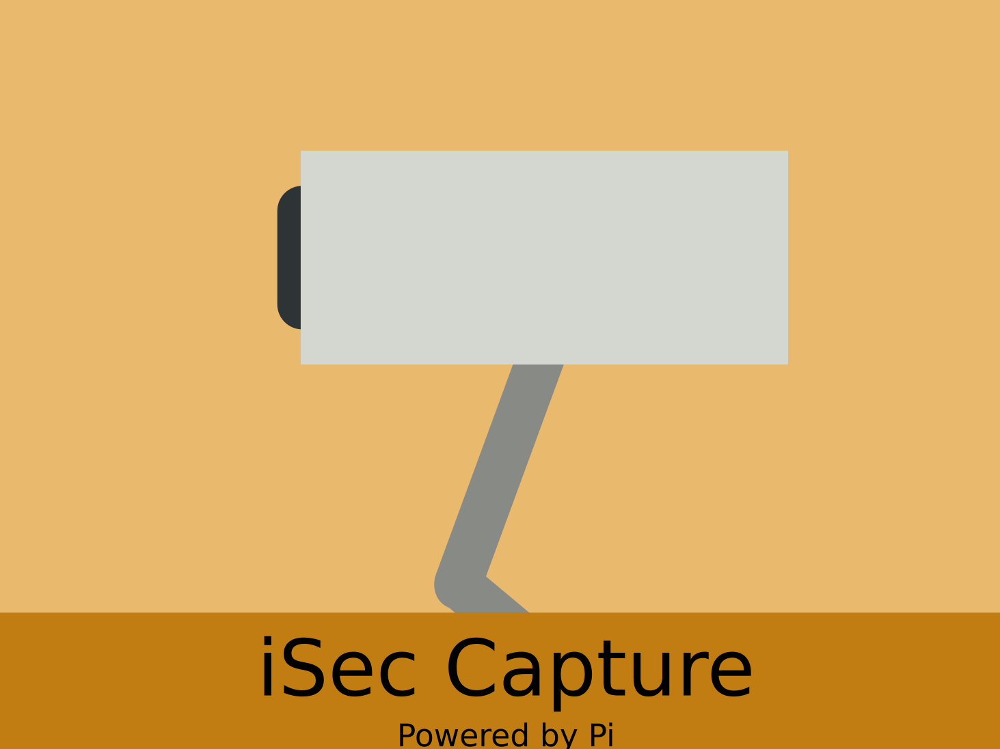

iSec Capture is a
Raspberry Pi security camera connected to the internet. It is housed
in a dummy security camera.

Here is a materials list:
- 1x USB Hub (I used one
from iBoost, but it is not on Amazon anymore. Choose a small flat
one.)
- 1x Raspberry Pi Zero
v1.3. I got mine from Adafruit.
- 1x MicroSD card, any
size. Make sure it is a reputable brand and will fit an OS! I like this
one.
- 1x USB cable. The
end doesn't matter, as long as one end is a USB plug. This
one is a good length, a good price, and has thick power
wires.
- 1x USB power
brick. Ideally it would supply 2 amps. I haven't found a
super-awesome yet, but this
one seems like a candidate.
- 1x Raspberry Pi
Camera. The version doesn't matter. I am using the old camera.
- 1x Pi Zero
camera cable adapter. I got mine from Adafruit.
- 1x Fake
security camera. I can't find the one I used on Amazon. If it helps,
my camera had a battery compartment, and made noises when it
detected motion, like "Intruder Alert! You have entered a
no-trespassing zone! Do not touch anything!"
- Assorted
buttons. These will be used to control the camera.
- 1x wifi
dongle. I recommend this
one because it has no casing and is cheap. It is intended for
the "pcduino" dev board, but I have tested it and it works with
Raspberry Pi.
- 1x Tiny USB
flash drive. I used this
one. It is USB 3.0, but that doesn't matter. The drive should
be fairly large (in storage).
Here is the skills you need
to build it:
- Soldering. We need
some way to put the electronics together!
- Dremeling. The dummy
security cameras have all sorts of supports that will get in the way
of our electronics.
- Basic Raspberry Pi
skills. You need to be able to set up a Pi, put it on a wifi
network, and a few other Linux things. I will be showing how to do
this in the semi-guide.
The first step of
building the iSec Capture is to take apart the security camera.
Naturally, this differs from camera to camera, but it is relatively
straightforward. You also need to remove all supports that are not
needed to close the case.
<image here>
The next step is to set
up the Raspberry Pi. Install Raspbian Jessie lite. More software
instructions soon.
Will be finished soon!!